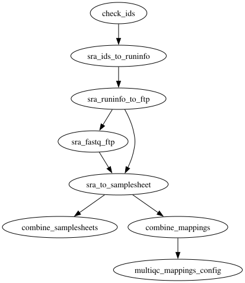

Fetching public sequencing data: FastQ download, metadata and samplesheets
Fetch metadata and raw FastQ files from public sequence databases (SRA/ENA/DDBJ/GEO). Given a list of database identifiers — run accessions (SRR/ERR/DRR), experiments, studies, biosamples or GEO series — the pipeline retrieves the ENA run metadata, downloads the FastQ files over FTP, validates every download against its ENA md5 sum, and auto-creates a samplesheet plus sample id-mappings and a MultiQC mappings config, ready for downstream nf-core pipelines such as rnaseq, atacseq or taxprofiler.
1.12.0$ oxo-flow run main.oxoflow
Run it
Downloads public data by SRA/ENA accessions (network required) — configure your IDs first.
Installation
Engine. oxo-flow >= 0.17.0
Toolchain. containers (Docker) — pinned images (quay.io/biocontainers, identical to upstream)
Requirements. - ids file: one SRA/ENA/DDBJ/GEO accession per line (config.input, default test/fixtures/ids.txt), kept in sync with the [[sample_groups]] sample source - reference data: none — the workflow downloads data from public archives; no genome FASTA, annotation or indices required - network: outbound access to ENA over FTP (wget -t 5 -c -T 60, 2 retries); the sratools branch needs NCBI SRA outbound access (prefetch/fasterq-dump), the aspera branch ENA fasp on port 33001 - compute: up to 2 CPUs / 12 GB per rule (FastQ download 2 threads/12G; metadata fetch 1 thread/6G; 4 h time limits on twelve rules) - disk: results/fastq/ grows with downloaded FastQ files plus md5/ checksums (depends on input size); metadata/ and samplesheet/ stay small
# 1. install oxo-flow (release binary, recommended)
curl -fL -o oxo-flow.tar.gz https://github.com/Traitome/oxo-flow/releases/latest/download/oxo-flow-latest-x86_64-unknown-linux-gnu.tar.gz
tar xzf oxo-flow.tar.gz && sudo mv oxo-flow /usr/local/bin/
# or, via conda (may lag behind releases):
# conda install -c bioconda oxo-flow-cli
# NOTE: bioconda currently ships 0.10.2, older than the >= 0.12.0
# minimum of every catalog entry — prefer the release binary.
# 2. get this workflow (clones the repo, auto-discovers the workflow,
# sanity-parses it with the engine)
oxo-flow pull gh:oxo-flow-community/oxo-flow-fetchngs
# (alternative: plain git clone)
# git clone https://github.com/oxo-flow-community/oxo-flow-fetchngs
Parameters
| Parameter | Default | Description | Used by |
|---|---|---|---|
download_method |
ftp |
— | sra_fastq_ftp |
ena_metadata_fields |
`` | Comma-separated ENA metadata fields; empty = upstream default field list. | sra_ids_to_runinfo |
input |
test/fixtures/ids.txt |
File containing SRA/ENA/GEO/DDBJ identifiers, one per line (upstream --input). Keep in sync with the [[sample_groups]] list below: check_ids validates this file, the sample source drives the per-id expansion. Add extra ids on the CLI with oxo-flow run main.oxoflow --sample <ID>. |
check_ids |
nf_core_pipeline |
`` | nf-core pipeline to tailor the samplesheet for (rnaseq/atacseq/taxprofiler); empty = none. | sra_to_samplesheet |
nf_core_rnaseq_strandedness |
auto |
— | sra_to_samplesheet |
out_dir |
results |
— | check_ids, combine_mappings, combine_samplesheets, multiqc_mappings_config, sra_fastq_ftp, sra_ids_to_runinfo, sra_runinfo_to_ftp, sra_to_samplesheet |
sample_mapping_fields |
experiment_accession,run_accession,sample_accession,experiment_alias,run_alias,sample_alias,experiment_title,sample_title,sample_description |
— | multiqc_mappings_config, sra_to_samplesheet |
skip_fastq_download |
false |
— | combine_mappings, combine_samplesheets, sra_fastq_ftp, sra_to_samplesheet |
Descriptions are the workflow's own # comments from its [config] section, surfaced by oxo-flow info — no schema file to maintain.
Workflow graph

The graph is derived at catalog-build time from oxo-flow graph -f dot and rendered with Graphviz. It shows the workflow at rule level: wildcard {sample} instances expand at run time when sample data is discovered (the runtime view is oxo-flow graph --expanded).
Scope
The default-parameters main path of the source pipeline was ported rule-for-rule; alternate paths are documented as excluded.
In scope
- check_ids
- sra_ids_to_runinfo
- sra_runinfo_to_ftp
- sra_fastq_ftp
- sra_prefetch
- sra_fastq_sratools
- sra_fastq_aspera
- sra_fastq_ftp_aspera_fallback
- sra_prefetch_fallback
- sra_fastq_sratools_fallback
- sra_prefetch_dbgap
- sra_fastq_sratools_dbgap
- sra_to_samplesheet
- combine_samplesheets
- combine_mappings
- multiqc_mappings_config
Excluded
- none
Fidelity
| Upstream process/rule | oxo-flow rule | Tool (version) | Notes |
|---|---|---|---|
PIPELINE_INITIALISATION (isSraId + id channel) |
check_ids |
python 3.9.5 | Validation regex, mixture/empty errors and deduplication ported 1:1 into scripts/check_ids.py; outputs results/pipeline_info/input_ids.txt. The ids channel itself is expanded from the workflow sample source ([[sample_groups]], add ids via --sample); keep [config] input in sync. |
| SRA_IDS_TO_RUNINFO | sra_ids_to_runinfo |
python 3.9.5 (quay.io/biocontainers/python:3.9--1) |
Upstream echo $id > id.txt; sra_ids_to_runinfo.py id.txt <id>.runinfo.tsv verbatim; --ena_metadata_fields flag emitted only when set (same conditional). One instance per input id (upstream: one process per id). The intermediate .runinfo.tsv lands in results/metadata/ (upstream leaves it unpublished in the workdir; oxo-flow requires declared outputs for the DAG contract). |
| SRA_RUNINFO_TO_FTP | sra_runinfo_to_ftp |
python 3.9.5 | sra_runinfo_to_ftp.py verbatim; output <id>.runinfo_ftp.tsv → results/metadata/ (published upstream). |
| SRA_FASTQ_FTP | sra_fastq_ftp |
wget 1.20.1 (quay.io/biocontainers/wget:1.20.1), md5sum (coreutils, in the same image) |
wget flags -t 5 -nv -c -T 60, -O <exp>_<run>[_1|_2].fastq.gz naming and echo md5 … | md5sum -c verification byte-identical; fastq → results/fastq/, md5 → results/fastq/md5/ (upstream publishDir patterns). Per-run row parsing replaces the Groovy channel branch; no outputs declared because the produced file set (single- vs paired-end, per-run names) is data-dependent — md5 verification in the command is the correctness gate (same as upstream). Runs without FTP links are skipped with a warning in the default config; with sra_tools_fallback = true they are handled by the per-run sratools fallback rules below (the upstream branch triage, ported as a when-gated branch — off by default so the default plan is unchanged). |
| SRA_TO_SAMPLESHEET | sra_to_samplesheet |
python 3.9.5 | Groovy exec block ported 1:1 into scripts/sra_to_samplesheet.py (removed keys, sample = experiment accession, fastq_1/2 = <outdir>/fastq/<file>, ENA columns appended, --sample_mapping_fields validation with upstream error text). localrule, 100 MB memory, executor 'local' mapped to localrule = true. Runs only when skip_fastq_download is false (upstream: channel empty when skipped). |
collectFile('samplesheet.csv') |
combine_samplesheets |
system (bash + coreutils) | Gather via expand_inputs over config.samples_list; header kept once, sorted by basename (upstream keepHeader: true, sort: { it.baseName }); results/samplesheet/samplesheet.csv. |
collectFile('id_mappings.csv') |
combine_mappings |
system (bash + coreutils) | Same gather semantics; results/samplesheet/id_mappings.csv. |
| MULTIQC_MAPPINGS_CONFIG | multiqc_mappings_config |
python 3.9.5 | multiqc_mappings_config.py verbatim; output results/samplesheet/multiqc_config.yml (upstream publishDir). Gated on sample_mapping_fields being set — on by default, same as upstream. |
softwareVersionsToYAML + versions.yml |
engine-native export: oxo-flow report --versions-yml <file> main.oxoflow |
— | oxo-flow ≥ 0.17.0 exports an nf-core-style versions.yml derived statically from the workflow declarations: one entry per rule (16 rules) with the pinned container image (registry + tag), or a system entry with an explicit "no software versions declared" note for the host-tool gather rules. Deviation: it is a standalone CI-diff artifact, not a per-process runtime capture — upstream records each tool's runtime version at execution time and collects the per-process files into pipeline_info/nf_core_fetchngs_software_mqc_versions.yml; the export reflects the pinned versions in the definition (resolved runtime package versions depend on the execution environment). Per-rule versions.yml emission inside every command is deliberately not replicated (it would change every rule's command while the default plan stays byte-identical). The collected file has no consumer in fetchngs itself (no MultiQC process; the mappings config targets downstream pipelines) — upstream ships it as boilerplate, here the export serves the same CI-diff purpose. |
PIPELINE_COMPLETION (workflow.onComplete: completionEmail / completionSummary / imNotification / sraCurateSamplesheetWarn) |
[workflow] on_complete + on_error hooks (scripts/pipeline_completion.sh) |
sendmail / mail / curl (host tools) | Ported onto the engine's workflow-level terminal hooks (engine >= 0.17.0): email mails the run-summary on completion, email_on_fail after a failed run (falling back to email, like upstream), hook_url POSTs a JSON notification with the run counters on both (upstream imNotification posts an Adaptive-Card/Slack JSON; here the payload is a {"text": ...} summary). All three default empty (upstream's null params), so the hooks no-op; older engines ignore the [workflow] keys entirely, keeping the default plan unchanged. completionSummary's stdout line is covered by the engine's own "Done: N succeeded..." line, and sraCurateSamplesheetWarn is a static log note (see Known limitations). Hooks are best-effort: a missing mail tool or failing webhook only warns and never changes the run status. |
| CUSTOM_SRATOOLSNCBISETTINGS + SRATOOLS_PREFETCH | sra_prefetch |
sra-tools 3.0.8 (quay.io/biocontainers/sra-tools:3.0.8--h9f5acd7_0) |
When-gated branch, off by default (download_method = "sratools" + dbgap_key empty): per-run prefetch under the upstream retry_with_backoff policy (5 attempts / 1 s base / 100 s max, scripts/retry_with_backoff.sh verbatim) + vdb-validate incl. the .sralite variant; fresh NCBI settings file per id (upstream CUSTOM_SRATOOLSNCBISETTINGS GUID config). SRA records land in results/sra/<id>/ (upstream publishDir results/sra, enabled: false — intermediates). Applies to all runs, matching upstream's explicit --download_method sratools mode; with dbgap_key set, the dbGaP variant below takes over. |
| SRATOOLS_FASTERQDUMP | sra_fastq_sratools |
sra-tools 2.11.0 + pigz 2.6 (quay.io/biocontainers/mulled-v2-5f89fe0cd045cb1d615630b9261a1d17943a9b6a:6a9ff0e76ec016c3d0d27e0c0d362339f2d787e6-0, fetchngs' patched image) |
When-gated on download_method = "sratools" (+ dbgap_key empty); depends on sra_prefetch. fasterq-dump --split-files --include-technical --threads + pigz --no-name --processes translated from the fetchngs module (env pinned to upstream environment.yml: sra-tools 2.11.0 + pigz 2.6); files land in results/fastq/ with the same names as the FTP branch so the samplesheet is method-agnostic. |
Per-run sratools fallback (upstream SRA workflow branch, runs without FTP/fasp links with download_method = "ftp" or "aspera") |
sra_prefetch_fallback + sra_fastq_sratools_fallback |
sra-tools 3.0.8 / 2.11.0 + pigz 2.6 (same images as above) | When-gated on sra_tools_fallback = true + download_method = "ftp" or "aspera" (off by default — the default plan is unchanged). Mirrors the sratools-method rules but processes only the runs upstream's branch sends to sra-tools: rows whose metadata has neither fastq_1 nor fastq_aspera (branch condition !meta.fastq_aspera && !meta.fastq_1, re-derived from the runinfo tsv by scripts/sra_prefetch_runs.sh / scripts/sra_fastq_sratools_runs.sh). Prefetch + vdb-validate incl. the .sralite variant, then fasterq-dump + pigz into results/fastq/ with the FTP-branch naming so the samplesheet is method-agnostic; the FTP rule keeps downloading the runs that do have links. |
dbGaP (--dbgap_key) |
sra_prefetch_dbgap + sra_fastq_sratools_dbgap |
sra-tools 3.0.8 / 2.11.0 (same images) | When-gated on download_method = "sratools" + dbgap_key set (off by default: dbgap_key = ""; the plain sratools rules are gated off in that case). The certificate is passed through verbatim like upstream: .ngc → prefetch --ngc / fasterq-dump --ngc, .jwt → --perm (SRATOOLS_PREFETCH shell and SRATOOLS_FASTERQDUMP script logic, same rules for both tools). Still requires the user's own NIH authorized-access credentials at runtime — the port itself needs nothing, and the public path (empty dbgap_key) is unchanged. |
ASPERA_CLI (Aspera CLI 4.14.0, fasp links) |
sra_fastq_aspera |
aspera-cli 4.14.0 (quay.io/biocontainers/aspera-cli:4.14.0--hdfd78af_1, the upstream image — verified to ship /usr/local/bin/ascp + the anonymous ENA bypass key /usr/local/etc/aspera/aspera_bypass_dsa.pem) |
When-gated on download_method = "aspera": ascp -QT -l 300m -P33001 (upstream ext.args) against the fastq_aspera fasp links with user era-fasp, md5-verified like the FTP branch. No credentials needed — the anonymous ENA fasp endpoint is what upstream uses. Deviation: upstream also sends runs without fasp links to the ftp/sra-tools branches per run; that triage is ported as when-gated branches (sra_fastq_ftp_aspera_fallback + sra_prefetch_fallback / sra_fastq_sratools_fallback, all on sra_tools_fallback = true), so with the fallback off such runs are skipped with a warning. |
Per-run FTP fallback for the aspera method (upstream SRA workflow branch: with download_method = "aspera", runs with an FTP link but no fasp link go to the FTP process) |
sra_fastq_ftp_aspera_fallback |
wget 1.20.1 (same image as sra_fastq_ftp) |
When-gated on download_method = "aspera" + sra_tools_fallback = true (off by default — the default plan is unchanged). scripts/sra_fastq_ftp_aspera_runs.sh carries the same wget -t 5 -nv -c -T 60 download + md5 verification loop as the frozen sra_fastq_ftp command, applied to exactly the rows upstream's branch sends to the FTP arm: fastq_1 set, fastq_aspera empty (branch condition meta.fastq_1 && !meta.fastq_aspera, re-derived from the runinfo tsv). Together with sra_prefetch_fallback / sra_fastq_sratools_fallback (same toggle) the runinfo tsv is fully partitioned — every run is downloaded exactly once by whichever branch upstream's branch would pick, with the FTP-branch naming so the samplesheet is method-agnostic. |
params.nf_core_pipeline (rnaseq/atacseq/taxprofiler columns) |
sra_to_samplesheet |
— | Off by default (empty), same as upstream; the column logic is ported and activates when nf_core_pipeline is set. |
publishDir / --publish_dir_mode |
n/a | — | oxo-flow has no publishDir; outputs are declared directly at their results/… paths. |
Known limitations: the ids used for per-id expansion must be declared in the
sample source ([[sample_groups]], or --sample on the CLI) and should match
[config] input validated by check_ids. The sra-tools and Aspera download
methods are ported as when-gated branches (download_method = "sratools" /
"aspera"); the upstream per-run triage is ported as when-gated branches
too, off by default so the default plan is byte-identical: sra_tools_fallback
= true restores upstream's per-run routing — with ftp, runs without
FTP/fasp links go to prefetch/fasterq-dump; with aspera, runs without a
fasp link go to the FTP branch when they have an FTP link
(sra_fastq_ftp_aspera_fallback) and to prefetch/fasterq-dump otherwise —
and dbgap_key enables the dbGaP certificate path of the sratools branch
(the certificate is passed through verbatim; the port itself needs no
credentials). Remaining deviation: with ftp or aspera and the fallback
off, runs whose metadata lacks the matching download links are skipped with
a warning (upstream would route them per run; enable sra_tools_fallback to
restore the triage). The auto-created samplesheet should be double-checked
before downstream use (the upstream sraCurateSamplesheetWarn end-of-run
note): public databases don't reliably hold information such as strandedness
or controls, and all sample metadata from the ENA is appended as additional
columns to help manual curation. The nf-core boilerplate (versions.yml
collection) is covered by the engine-native export
(oxo-flow report --versions-yml <file> main.oxoflow, see table).
Links
- Repository: oxo-flow-fetchngs
- Upstream: nf-core/fetchngs @
1.12.0 - License: Apache-2.0 (this workflow) · MIT (upstream)
Created on 2026-08-15 — this port may lag behind upstream releases. See the repository's NOTICE for full attribution.